Open up a new file.
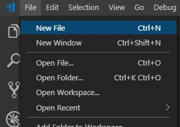Save the file as HTML
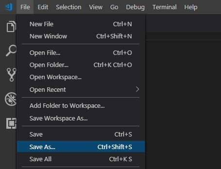Make the outline of your document. The first real step you'll need to do when making your document is setting the main format for your whole document. To do this you will enter "!" and press the "tab" button. Doing this will set the basis on which you will create your website
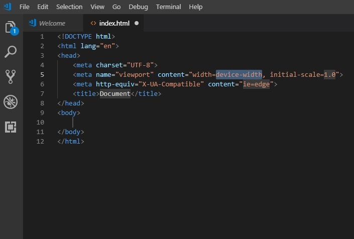Next you will enter the title of the main document in the "title" tabs at the top of the file.
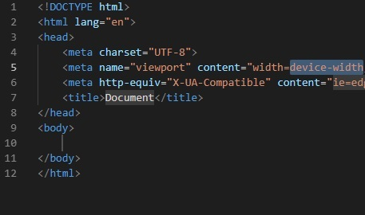Then starting in the "body" tab you will create the main title that'll appear on your main website page. To make this stand out you will use "h" which will set the heading size.
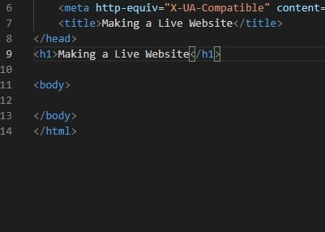If there is annything you wish to add under your title, you will enter the the paragraph attribute whcih will allow you to write text that'll appear under your title.
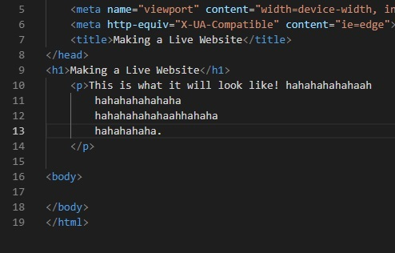Before going on, it is important to set up a typesheet. This will allow you to customize anything from color and font size to word formatting and background pictures. To do this you will go back to the top of the file and make a new line right under the Doucment title. Here you will type "link" and press the "tab" button. This will open up "rel: stylesheet" which tells you what you're going to be linking to. Along with the stylesheet, "href" will appear. Here you will enter the place where the assets are coming from, (example: styles/styles.css)
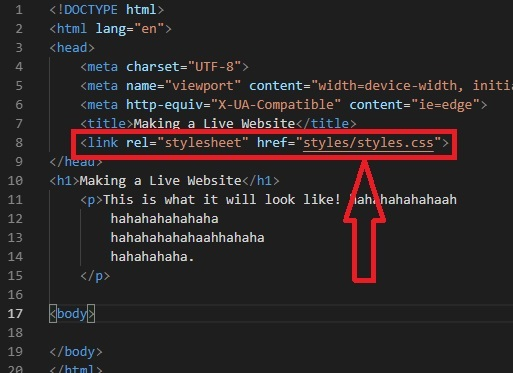Next, in the event that you want to include an image, here is what you will do. Wherever in your head that you want include a photo, make sure you start a new line. On this new line you'll type "img" and press tab. This will open up "src" and "alt". Like with the stylesheet, you're going to link the photo directly. 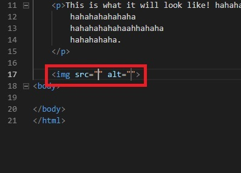
To do this you will input the file as such: "assets/example-photo". In the "alt" portion of the "img" you will signify what the picture is in relation to your document so it is easily identifiable. 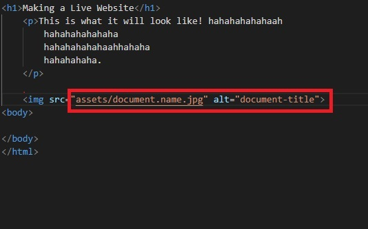
Next, if you choose to link an address to a website, you'll first need to create an attribute. Within the attribute you will want to add "href" for your external link. Within the "href" you will want to put the address link. 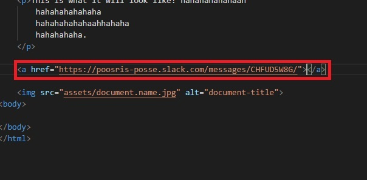
If you want to display a name on your website for the website link, then all you have to do is enter that name after the "href" bracket, but make sure that it is still enclosed within the main attribute. 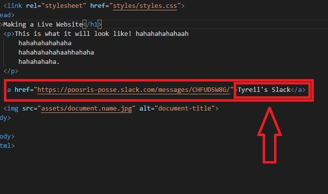
Now we're nearing the end! The next step is to publish your site and make it official! First thing you'll do is go to GitHub and sign in! 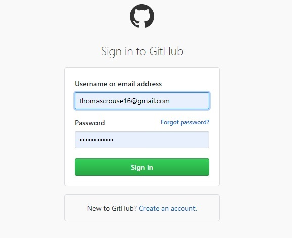 (If you don't have an account make sure you make one!)
Now you will go in and make a "New Repository" 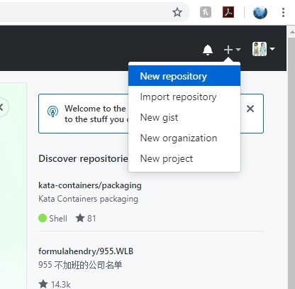
Here you will name your respository. After doing that you will mark "initialize this repository with a README". After that you will click "create repository". 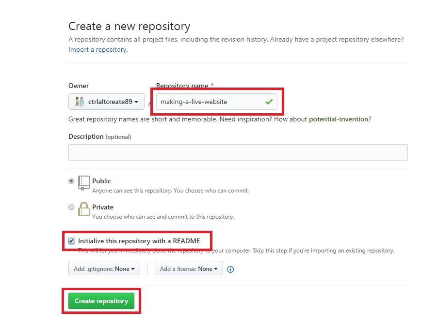
You will then be brought to a page where you can edit and delete files in your repository. Here you'll click on "Upload Files" and drag in your main html document as well as your assets and styles folders. Then you can click "upload files" 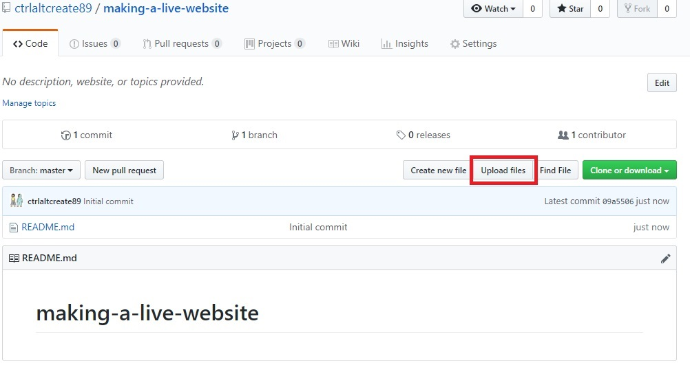
Now that you have uploaded your documents you will go to your settings and scroll down to "GitHub Pages". You will then click under Source and choose the option "master branch".
Doing this will refresh the page and give you the link to your webite, making it live!